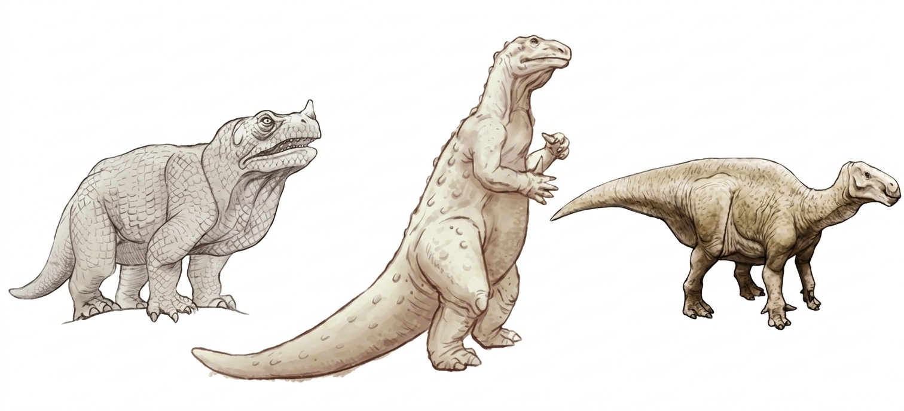
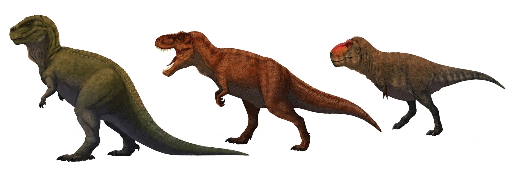
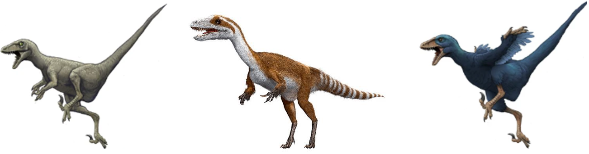
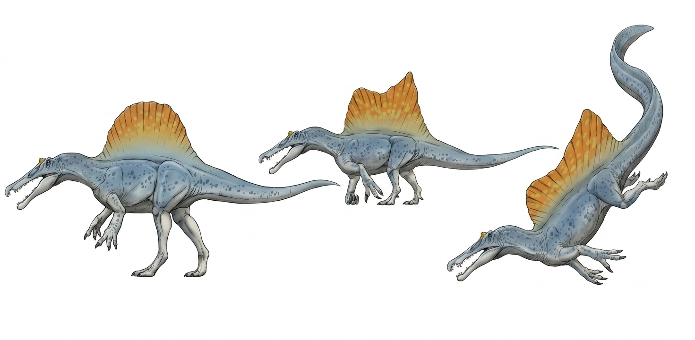

科学の歴史は、新たな発見やテクノロジーの導入によって従来の「常識」が覆される歴史でもあります。本稿では、最新科学によってイメージが劇的に変わった「恐竜の姿」と、観測精度の向上に伴い正確さを増してきた「宇宙の年齢」の2つの文脈から、現実の認識の塗り替え（変遷）を検証します。
Ⅰ. 恐竜の姿：イメージの変遷と古生物学の進化
古生物学はかつて「化石を発掘して分類する地質学の一分野」でしたが、最新テクノロジーの導入により「絶滅生物の生態や地球環境の歴史を科学的に復元する生物学」へと劇的な進化を遂げています。
1. 研究アプローチ：化石の「外側」から「内側・ミクロの世界」へ
かつては化石の外形を観察・スケッチし分類する「形態学的な記載」が中心でした。現在は、医療・工業用CTスキャンにより化石内部の微細な骨や脳腔の3D復元が可能となり、シンクロトロン放射光によるX線分析で細胞レベルの構造や元素特定まで行われています。
2. 恐竜像の変遷：「鈍重なトカゲ」から「活動的な鳥の祖先」へ
初期の恐竜像はワニやトカゲの延長で、尾を引きずり動かない冷血動物と見なされていましたが、現在は「鳥類の祖先」として完全に定着しています。
- 羽毛の発見：保存状態の良い羽毛恐竜化石が相次いで発見されました。
- 体色の解明：色素細胞（メラノソーム）の形状比較から、具体的な体色（赤茶色や光沢のある黒など）が科学的に解明されました。
- 生態の復元：骨の成長線分析などから、温血動物に近い高い代謝熱をもち、活発に動いていたことが判明しています。
3. 古生物学における復元図（予想される姿）の時系列変遷
1）19世紀中期：巨大な「トカゲやサイ」の時代
恐竜（Dinosauria）という概念の黎明期。断片的な骨しか見つかっておらず、現生爬虫類や哺乳類をモデルとしました。
具体例（イグアノドン）：親指の骨を鼻の角と誤認し、巨大なイグアナのような4本足の姿で復元されました（ロンドンの水晶宮模型など）。

2）20世紀前半〜中期：ゴジラ型の「直立・冷血動物」の時代
直立姿勢が判明したものの冷血イメージが強く、尾を引きずって上体を起こす「カンガルー型（ゴジラ型）」として描かれました。
具体例（ティラノサウルス）：怪獣のような直立姿勢で、沼地に身を潜めるイメージが定着していました。

3）20世紀後半（1970年代〜）：恐竜ルネサンス「活動的な温血動物」へ
小型恐竜「デイノニクス」の発見を機に学説が大転換。尾を水平に上げ、俊敏に走る「前傾姿勢」の温血動物像へと一新されました。
4）21世紀〜現在：「羽毛と色彩」の時代
中国の羽毛恐竜化石やメラノソーム解析により、科学的裏付けに基づく色彩と羽毛を持つ復元図へ激変しました。
具体例：ティラノサウルス幼体の羽毛復元や、ミクロラプトルの光沢ある黒い羽など。


4. 恐竜研究におけるAI（人工知能）の導入効果
AI for Science の導入により、発掘から復元、シミュレーションに至る研究全体の高速化・精密化が進んでいます。
- 化石クリーニングと発掘の自動化：CTデータからAIが骨と岩石を識別し、自動削開や微小化石の短時間判定を実現。
- 3Dモデルによる骨格復元：地圧で歪んだ化石の形状修正や、欠損部位の機械学習による自動補完。
- バイオメカニクス（生物力学）：骨格データと強化学習を用いた動作シミュレーションで、走速や咬合力をリアルに算出。
- 未発見エリアの予測：衛星画像や地質データを解析し、化石埋蔵の可能性が高い地層を予測。
Ⅱ. 宇宙年齢：観測精度向上による認識の変遷
宇宙の年齢推定もまた、観測機器と技術の進歩によって大きく塗り替えられてきた代表例です。2000年代初頭の「137億年」から現在の「138億年」への微修正は、現代の精密宇宙論を象徴しています。
1. 宇宙年齢推定の時系列変遷
| 時代 | 推定された宇宙年齢 | 主な根拠と背景 | 発生した問題点・課題 |
|---|---|---|---|
| 1929年〜1930年代 | 約20億年 | ハッブルによる銀河の赤方偏移（膨張）の初観測。 | 地球の岩石の年齢（約30億年超）より若いという致命的矛盾（最初の宇宙年齢問題）。 |
| 1950年代 | 約100億〜200億年 | セファイド変光星の「種類の誤り」に気づき、距離ハシゴを修正。 | 観測誤差が大きく正確な値を絞り込めず論争へ。 |
| 1990年代前半 | 約80億〜120億年 | ハッブル宇宙望遠鏡（HST）によりハッブル定数の測定精度向上。 | 最古の球状星団の年齢（140億〜160億年）より若くなり第二の宇宙年齢問題が発生。 |
| 1998年 | 約130億〜140億年 | 遠方超新星観測から宇宙の加速膨張（ダークエネルギー）を発見。 | 計算上の年齢が引き伸ばされ、球状星団の年齢との矛盾が解消。 |
| 2003年 | 137億年 (±2億年) | WMAP衛星による宇宙マイクロ波背景放射（CMB）の全天観測。 | ダークマターやエネルギーの割合が明確化し、精密宇宙論が確立。 |
| 2013年〜現在 | 138億年 (137.99±0.21億年) | プランク衛星による超高解像度のCMB観測。 | WMAPより膨張速度が僅かに遅く見積もられ、年齢が約1億年延びて138億年に定着。 |
2. 最近の変遷（137億年から138億年への変化）
観測の「解像度」が上がったことにより、2000年代の137億年から2010年代の138億年へと修正されました。
- WMAP衛星（2003年）：CMBの温度のムラからハッブル定数を「約71 km/s/Mpc」と算出し、宇宙年齢を137億年と推定。
- プランク衛星（2013年）：より高精度な観測により、ハッブル定数が「約67.4 km/s/Mpc」と推定され、宇宙の膨張スピードが「想定よりややゆっくり」であることが判明。
- 年齢が伸びた理由：膨張速度が遅いということは、現在の大きさに達するまでに長い時間を要したことを意味するため、年齢が約1億年引き上げられて138億年（137.99億年）となりました。
3. 2020年代：最新動向と「ハッブル張力」によるさらなる変動
現在、天文学界は「ハッブル張力（Hubble Tension）」と呼ばれる新たな課題に直面しており、今後宇宙年齢の認識がさらに変動する可能性を秘めています。
- JWST（ジェイムズ・ウェッブ宇宙望遠鏡）による観測：初期宇宙のCMBデータから導く年齢は「138億年」ですが、JWSTなどが近傍の星や超新星を直接観測すると「より速く膨張している（＝ cosmic age は130億〜134億年ほどで若い）」という矛盾するデータが得られます。
- 理論の限界と新たな可能性：138億年は宇宙の標準模型（ΛCDMモデル）を前提としますが、JWSTは想定以上に早期に形成された成熟巨大銀河を相次いで発見しており、初期宇宙の進化論や未知の物理学（ダークエネルギーの変動等）の導入が議論されています。